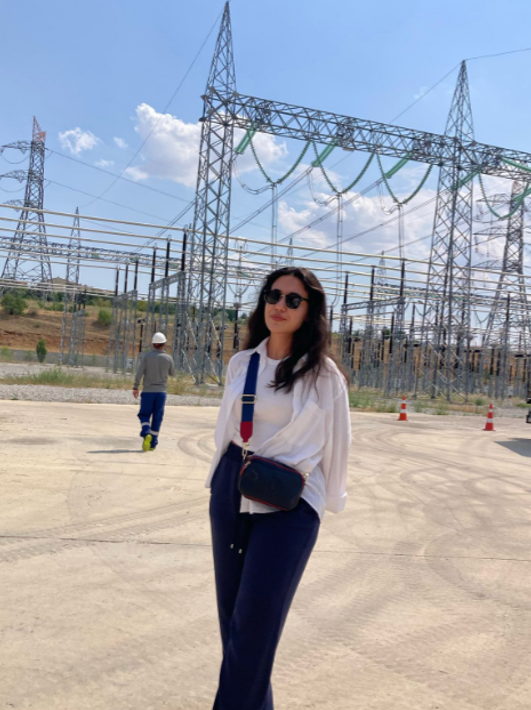
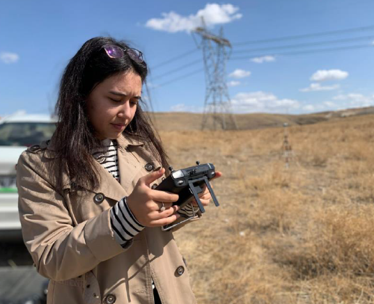
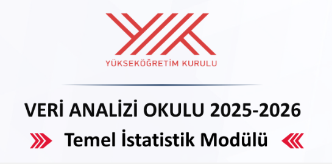

Experience
CANDIDATE ENGINEER
ELTEMTEK Inc. | July 2024 - Sep 2025
- LiDAR data processing, projection transformations, and automation development using Python
- Processing of satellite/aerial imagery with OpenCV
- Geographic database management and automation with PostGIS
- Energy line and vegetation analyses using ArcGIS & Global Mapper
- 3D terrain modeling and visualization with MicroStation

INTERN ENGINEER
TEİAŞ General Directorate | July 2025 - August 2025
- Engineering and map-focused monitoring of expropriation processes for energy transmission lines
- Contributing to route/terrain analyses and data verification processes using ArcGIS and Netcad
- Gaining experience in field-office coordination with survey engineers

INTERN ENGINEER
ELTEMTEK Inc. | September 2023 - October 2023
- Spatial data analysis using ArcGIS, QGIS and GlobalMapper
- Analysis and projecting of maps obtained by UAV
- Flight Data Collection and Drone Operations
- Orthophoto and 3D Model Production

ARTIFICIAL INTELLIGENCE MODULE
YÖK Data Analysis School (2025-2026)
- Completed the "Artificial Intelligence" module within the Data Analysis School program...
- Gained applied skills in Generative AI (GenAI), Large Language Models (LLM), and RAG systems.
- Applied machine learning algorithms including SVM, Random Forest, and Naive Bayes...
